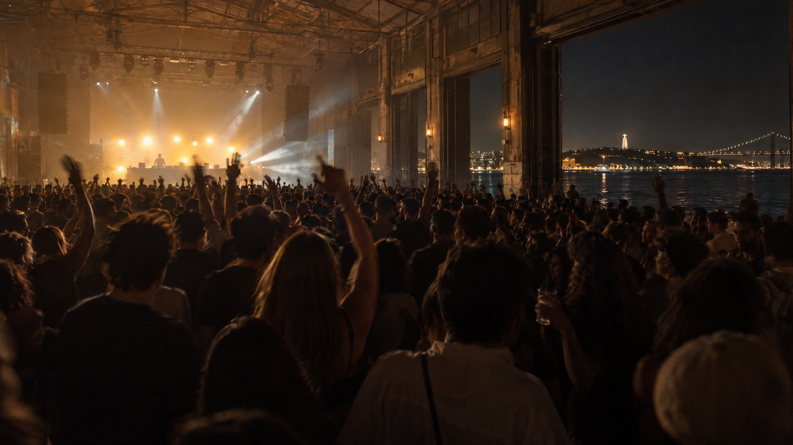
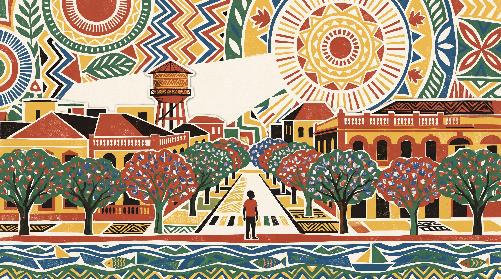
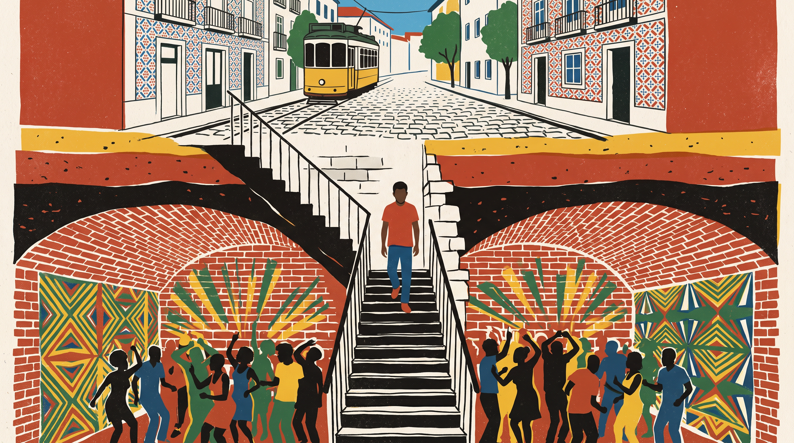

Passei a vida a juntar pessoas, na pista e nas festas que criei. Agora construo as coisas que eu próprio precisava.

O horizonte do mar passa a ser a onda da faixa que está a tocar.

Vivo em Lisboa. Passei a vida a juntar pessoas
e agora construo as coisas que eu próprio precisava.

Os padrões da parede pulsam com a música, se carregares no som.
Maputo, 2012Aos 16 anos já era dagotinho: o nome dos jogos, que ainda hoje é o meu domínio.
18 de Outubro de 2021WhyViiDee desfaz-se e volta a montar-se como Dagô. Lá dentro, os palcos.